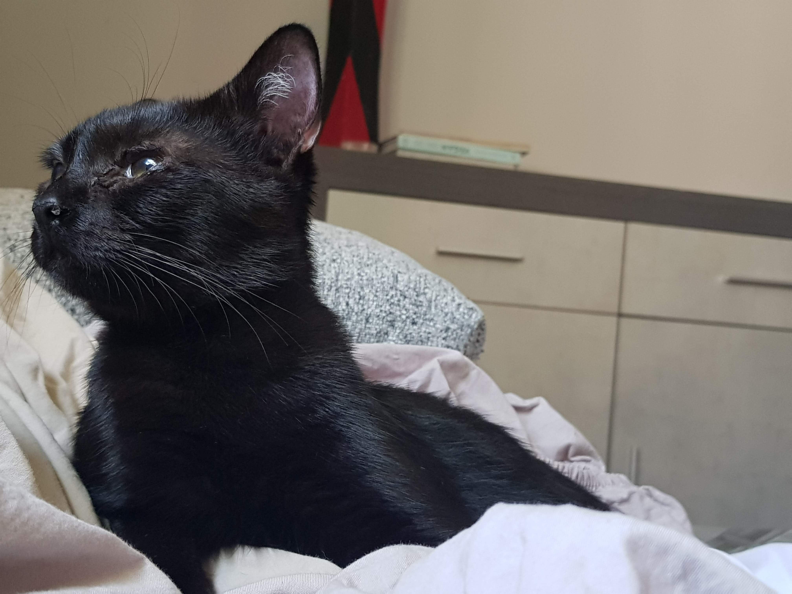
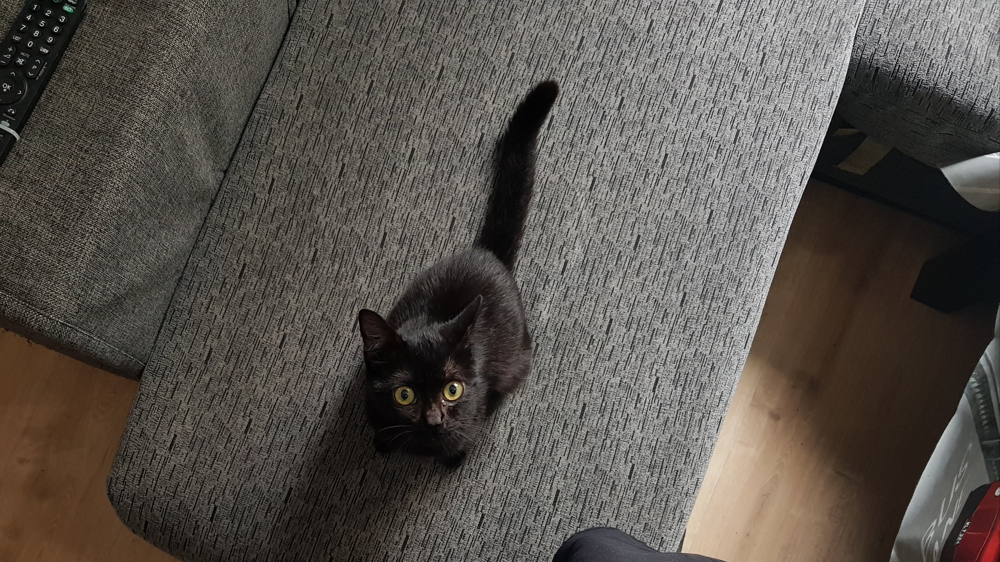
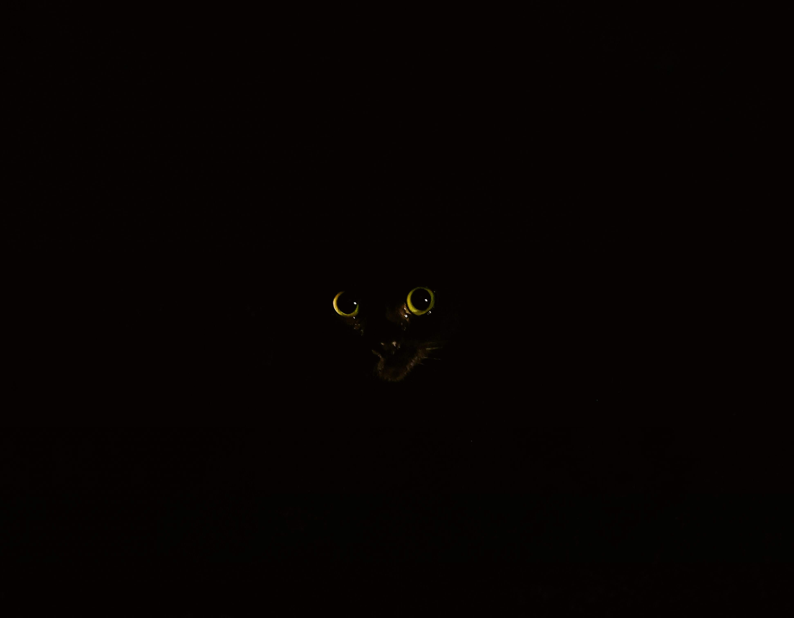
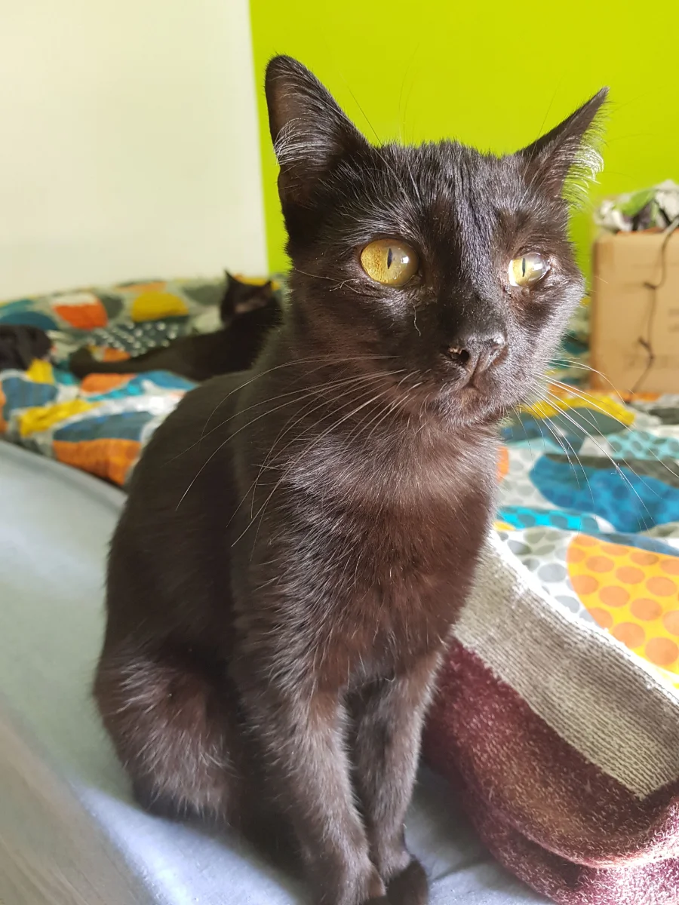
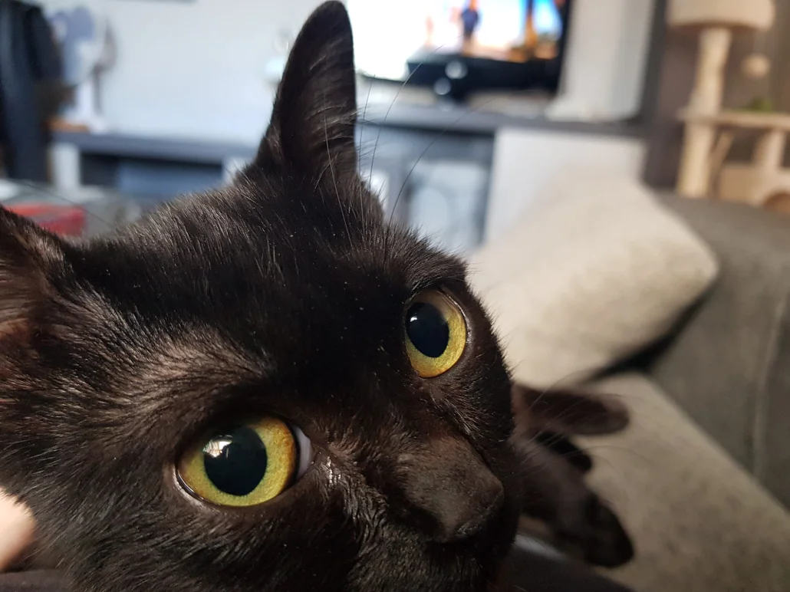
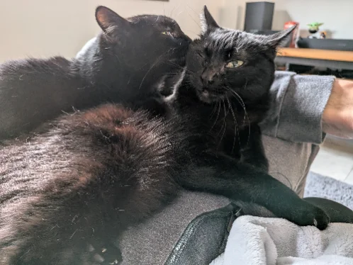
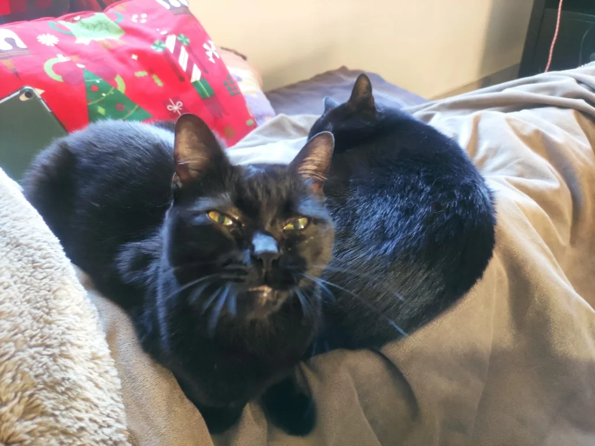

03 / 03 — the two of them
Morty & Negrita
A veces son una sola sombra con cuatro orejas. Sometimes they are weather. Always, they were here first.




Two Black Cats is not a brand. It is the daily record of Morty and Negrita, dos Bombays que viven a contraluz — ojos de ámbar, pasos en el parqué, costumbre de mirar fijo cuando la noche se vuelve interesante.
Este sitio reúne fotos, notas y pequeños rituales. Tres capítulos: una, la otra, las dos. Léelo con calma. La luz tarda en llegar.

Morty entra a un cuarto y la temperatura baja dos grados. He learned silence from the marble floor and patience from the moon.
She is the loud one. Si Morty es el invierno, Negrita es el verano que se cuela por la ventana y rompe el florero a propósito.



A veces son una sola sombra con cuatro orejas. Sometimes they are weather. Always, they were here first.


A short film, an archive, a love letter. Updated when they let us.
Para colaborar, mandar atún o solo decir hola: hello@twoblackcats.studio